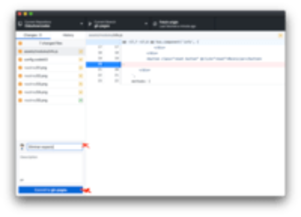
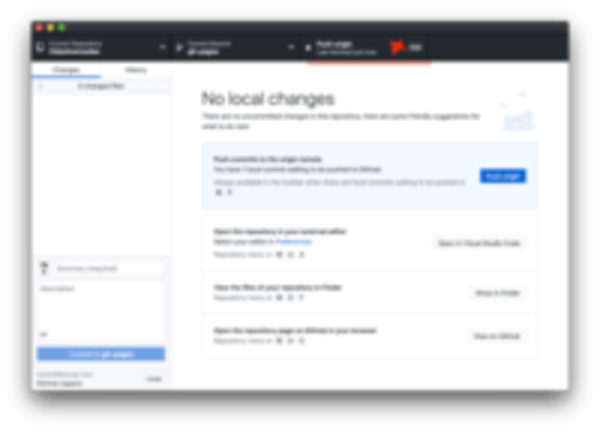

| Instrucción | — |
|---|---|
| Descargar Github | |
| Add > Clone Repository | |
| Buscar OdasAvanzadas, seleccionar y click en “CLONE” | |
| Abrir carpeta dando click derecho sobre el repositorio y “Reveal in Finder” | |
Para publicar cambios se realizan “Commit”, que implica colocar un título (y descripción * opcional) para saber qué se realizó.
| Instrucción | — |
|---|---|
| Al comenzar a trabajar y antes de hacer cambios “mayores” realizar un Fetch Origin para verificar la sincronización. Si hay datos por actualizar aparecerá el botón Pull from Origin, que realizará la actualización. |  |
| Cuando se modifican los archivos se habilita el Commit, donde se ingresa el summary y luego se da click al botón Commit to gh-pages |  |
| Luego de hacer el commit se hace un Push Origin para publicar el cambio |  |

Navegar hacia el proyecto en la terminal
cd ruta/hacia/la/carpeta

Correr un servidor local con el comando
php -S localhost:8000

php -S localhost:8000
function fancyAlert(arg) {
if(arg) {
$.facebox({div:'#foo'})
}
}
<drag><p>PRobando...</p></drag>